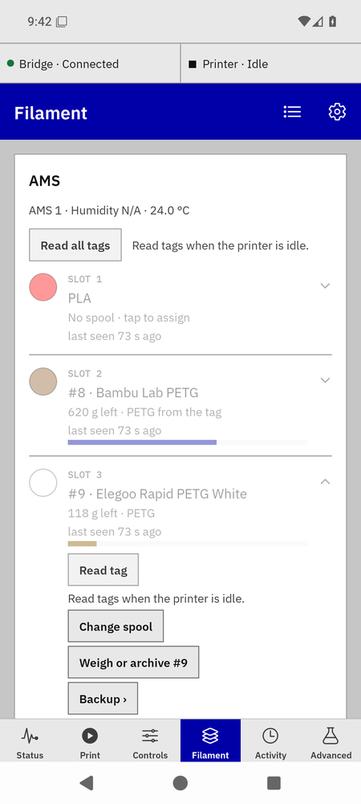

Troubleshooting
By what you see. Each entry says what it means and what to do.
Connection
- Red band "Can't reach the bridge" · "Join home Wi-Fi or turn on Tailscale — showing cached data."
- The phone can't reach the bridge's address. Check Tailscale is on, or that you're on the saved home network. The app keeps the last data it had; nothing is lost. Settings → Check connection says which address answers.
- "Bridge · Unreachable" with the printer "Unknown"
- Same cause from the top strip. If Tailscale and Wi-Fi are fine, the bridge service may be down: on the bridge host,
systemctl --user status bambu-bridge.
- "Printer · Offline" while the bridge is connected
- The bridge can't reach the printer. Its IP may have changed (give it a DHCP reservation), LAN-Only Mode may be off, or the printer is off. Settings → the printer's address.
- Every call fails right after adding the printer
- One bridge per printer: a second bridge or another LAN client logging in kicks the first off. The bridge's TROUBLESHOOTING doc covers this first.
Filament tab
- Every row is dimmed with "last seen 73 s ago"
- The printer hasn't sent a full AMS report for over 30 s. The rows show the last known slots; assigning waits ("The printer hasn't reported this slot lately. Try again in a moment."). It clears on the next report; pull down to refresh.

A quiet printer.
- "AMS re-scanning — slot data returns in a few seconds."
- The AMS is re-reading tags; the rows hold their last state, dimmed. Normal after loading a spool.
- "reading tag…" stays for a long time
- A tag read takes about a minute. If it never clears, the tag didn't read: take the spool out and in again, or use Read tag once the printer is idle.
- "No tag found in slot 2 · reports PETG"
- The slot holds an untagged spool, or the tag is unreadable. Assign the spool by hand.
- "The printer reads tags when it's idle" / "Fresh printer status required"
- The printer is busy, or the bridge has no fresh status yet. Wait for idle and tap Try again on the row.
- "Couldn't reach the bridge. Try again." on the Filament tab
- The app reached the bridge for the printer but the spool calls failed; pull down to refresh. If it persists, the bridge can't reach Spoolman (next section).
- The swatch is the wrong colour
- The fill is Spoolman's colour for the assigned spool. If the spool's record in Spoolman has the wrong colour, fix it there ("Open Spoolman"). A ring is the printer's declaration and is expected inside a refill backup.
Spoolman
- "Spoolman didn't answer. Try again."
- The bridge couldn't reach Spoolman or its reply was lost. Nothing was sent twice. Check that Spoolman is up and that the bridge's
BRIDGE_SPOOLMAN_URL points at it. Charges keep counting and retry on their own for six hours.
- "Spoolman rejected the change; check the values"
- Spoolman refused a record (for example a product without density). Fix the values and try again.
- "Spoolman has no such record"
- The spool, product or vendor was deleted in Spoolman. Pull down to refresh and pick again.
- "This bridge has no Spoolman address." (Settings)
- Spool tracking is off until
BRIDGE_SPOOLMAN_URL is set in the bridge's env file and the service restarted. The printer controls work without it.
- "Remove #5 from slot 2 first" when archiving
- An assigned spool can't be archived. Open the slot → Change spool → Remove from slot, then archive.
Charges
- A card says "41 g from slot 3 · no spool was assigned"
- That slot fed a print with no spool assigned. Pick the spool on the card; keep it assigned for next time.
- "#5 ran out in Spoolman" / "12 g short"
- Spoolman's remaining weight reached zero before the print's count did; the figure in Spoolman was low. Charge the rest to the right spool on the card, and weigh the spool.
- "This print is already settled"
- The card was answered from another device. Pull down to refresh.
- A print was charged to the wrong spool
- Wrong spool? on the print under Recent prints.
- "Gave #5 83 g back; Spoolman didn't answer; try again"
- The credit landed but the charge didn't. Tap Move again: only the charge is sent.
Refill backups
- "Backup: slot 4 · waiting for the printer to confirm" for more than a minute
- The printer regroups its slots a few seconds after the write; a longer wait means it didn't accept the declaration. Open the sheet: a needs-you card offers Try again (it re-reads the slot first) and Remove backup.
- "The spool in slot 4 was changed on the printer"
- Someone edited the slot on the printer's screen while it was a backup. Remove the backup and set it again.
- "Remove the slot 3 backup first"
- One backup per printer in this release.
- After a bridge restart the chain says "waiting"
- Expected until the printer's next full report; the bridge resends nothing on its own. If it stays waiting while the printer is on and idle, open the sheet: Try again, or Remove backup and set it again.
- Advanced → AMS filament setting says "Slot 3 is in use"
- The slot holds an assigned spool or belongs to a backup; a raw write would change what the printer declares for it. The card says what writing anyway does and where the safe way lives (Change spool, or remove the backup). Write anyway overrides, and names the assignment it ends when it ends one.
Bridge host
- Updating
- On the bridge host:
bash deploy/bambu-bridge-update.sh. It backs the database up, pulls or installs the new version, restarts the service and prints old vs new version. The app reconnects on its own.
- Rolling back
- Stop the service, restore the pre-update database backup from
~/.local/share/bambu-bridge/backups/, install the previous version, start the service. The bridge's UPDATING doc has the exact commands.
- Logs
journalctl --user -u bambu-bridge -f on the bridge host.
Bambu Bridge manual · for bridge 0.7.0b1 and app 0.21.0-beta.9. Independent community software, AGPL-3.0-only.